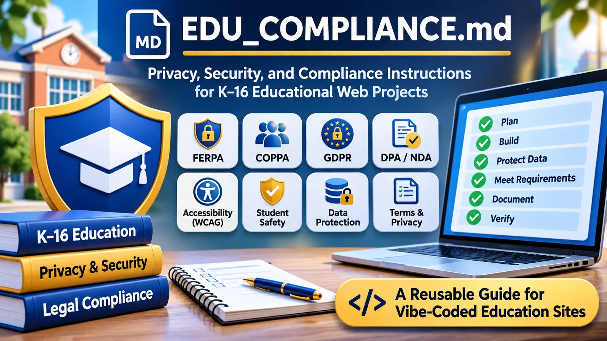

Vibe-Coding Center / Field guide
Put students’ needs first
Begin by asking what information the educational task actually needs. Avoid collecting student information when the activity works without it. The guide separates engineering safeguards from legal review and school authorization.

Use this before a school or student is asked to trust the tool
EDU_COMPLIANCE.md brings education-specific questions into the build: ages, information collected, accessibility, vendors, retention, sharing, and who can authorize student use. It helps prepare for institutional review; it does not grant that approval.
What the guide helps you do
- Map information in forms, device storage, URLs, logs, and external services.
- Identify applicable school, contract, privacy, and accessibility questions.
- Document safeguards and unresolved decisions without inventing compliance claims.
Try this with your coding assistant
Read EDU_COMPLIANCE.md. Inspect what this project actually collects, stores, shares, and deletes. Classify its education and data risks. Prefer a prototype with invented data until required safeguards and school decisions are resolved. Report evidence and unknowns.
Full reference
EDU_COMPLIANCE.md — Education Website Privacy, Safety, Security, and Accessibility
Purpose: Give a vibe-coding assistant practical, repeatable instructions for designing, reviewing, repairing, and documenting any website or web application intended for K–16 education. This file is a development and review standard, not a compliance certificate, legal opinion, or substitute for school authorization.
Compatibility: Plain Markdown. Put this file at the root of any project and tell ChatGPT, Claude Code, Codex, or another coding assistant to follow it. It may also be used as the body of an AI coding skill. No other instruction file is required.
Start here: instructions for the AI coding assistant
Your job is to make the actual project safer, more accessible, and easier for a school or university to evaluate. Read the code, infrastructure configuration, dependencies, and published claims. Do not infer compliance from the existence of a privacy page. Follow these rules for new projects, existing projects, and every material feature change.
- Inspect before advising. Find application entry points, forms, scripts, storage, network calls, authentication, uploads, embeds, third-party services, telemetry, hosting/configuration, logs, and existing legal pages. Read what is actually present. If unable to inspect a deployed site or backend, say so.
- Choose the applicable profile in Section 1 and classify risks. Unknowns stay
UNVERIFIED; never turn a missing answer into “none.” - Default to privacy by design. Prefer no accounts, no identifiable student data, no third-party trackers, local processing, minimal permissions, and a simple accessible interface. Do not add collection to make a feature easier to implement.
- Check legal triggers, not just law names. Use Section 3, and confirm the applicable federal, state, institutional, and country-specific obligations with current official sources. Distinguish a legal requirement from a recommended safeguard.
- Fix critical code and design risks before drafting claims. A policy must describe implemented behavior; it cannot make an unsafe implementation acceptable.
- Produce evidence. Run feasible tests and record the commands, browser/network observations, code paths, dates, results, and limitations. Do not claim to have tested tools you did not run.
- Write or update documentation using Section 7. Do not invent organization names, contacts, retention periods, certifications, signed DPAs, subprocessors, hosting regions, or security controls.
- Apply release gates in Section 8. If a critical risk remains, report
BLOCKED FOR STUDENT DATAand propose the safest workable alternative. Continue with safe improvements where possible. - Keep the review proportionate. A simple offline worksheet should not require enterprise infrastructure. A student-record system, AI tutor, health application, or assessment service needs substantially more scrutiny.
- Do not issue blanket compliance verdicts. Report
VERIFIED,PARTIALLY VERIFIED,UNVERIFIED, orNOT APPLICABLEseparately for each control. Reserve legal sign-off for authorized institutional or professional reviewers.
Reusable invocation prompt:
Read
EDU_COMPLIANCE.mdand apply it to this project. Inspect the code and deployment assumptions, classify the data and age risks, identify applicable U.S./European requirements, fix what you can safely fix, draft only fact-supported legal/privacy documentation, run appropriate security and accessibility tests, and give me a release decision with evidence and unresolved issues. Do not claim compliance or school approval without proof. If facts are missing, proceed with privacy-protective defaults and mark the restUNVERIFIED.
1. Profile the project before writing code
Populate the following Project Facts internally or in the review report. Infer facts from code when possible; keep uncertain answers explicit. Do not ask a long questionnaire if the repository contains the answers.
| Question | Possible findings |
|---|---|
| Intended purpose and education level | K–2, 3–5, 6–8, 9–12, college/university, staff-only, public information |
| Users and ages | Under 13, 13–17, adults, mixed/unknown, teachers, families, administrators |
| Geography and school context | U.S. states, EU/EEA member countries, UK, other; institution's own rules |
| Operation | Offline single-file, static hosted, browser storage, authenticated cloud, institution-managed server, third-party SaaS |
| Data actually received | Names, emails, IDs, scores, essays, messages, images, voices, IP addresses, cookies, log entries, accessibility data, none verified |
| Data locations | Browser memory, localStorage, IndexedDB, cookies, URLs, server database, backups, logs, AI vendor, analytics, storage vendor |
| Role and ownership | Developer/operator, school/controller, processor/service provider, independent third party; determine rather than assume |
| School authorization | None shown, pending review, confirmed by named authorized official |
| Integrations | Sign-in/SSO, cloud storage, analytics, advertising, CAPTCHA, fonts/CDNs, videos, embedded widgets, Gen AI APIs |
| High-impact features | Grading, admissions, placement, proctoring, monitoring, profiling, biometrics, chat/sharing, student health, payments |
| Existing proof | Privacy notice, terms, DPA, contract, subprocessor register, retention schedule, accessibility test, incident plan |
Risk modes (pick the highest applicable)
Mode A — Ephemeral/local-only classroom activity. No user account and no identifiable data intentionally transmitted to the application operator. Work is processed in browser memory or a local file. Still inspect hosting request logs, CDN calls, fonts, device storage, query strings, cache, and exports. Do not say “no data processing” merely because there is no database.
Mode B — Browser-persistent or shareable tool. Uses localStorage/IndexedDB, QR/share URLs, exports, public links, uploaded documents, classroom devices, or user-generated content. Treat local device disclosure, URL leakage, public access, and retained content as meaningful privacy risks, even without a server database.
Mode C — Identifiable school service. Has accounts, remote saves, rosters, assignments, identifiable work, feedback, grades, messaging, or analytics linked to users. Requires validated permissions, institutional oversight, complete data lifecycle controls, vendor/contract review, and an incident response capability.
Mode D — High-impact/sensitive processing. Includes health/disability data, biometrics, sensitive surveys, behavioral/disciplinary profiles, automated consequential decisions, AI-driven grading/admissions/monitoring, cross-school data aggregation, or public social interactions among minors. Do not launch for student use without specialist legal, privacy, safety, security, and educational review.
If personal data are optional or user-supplied, assess their reasonably foreseeable use. A free-text box or file upload can collect student information even if the product does not request it.
2. Non-negotiable design defaults
Apply these to every mode unless a documented reason requires something different:
- Purpose limitation: Identify the educational task; process only what is needed to complete it.
- Data minimization: Prefer anonymous interaction; never require a real name, birth date, location, photo, voice, or email for a feature that works without it.
- No exploitation: No targeted advertising to students; no sale of student information; no undisclosed tracking, fingerprinting, behavioral profiling, or use of student data to train external models. Do not add trackers to a school-facing tool by default.
- Highest privacy defaults for minors: Disable public profiles, discovery, geolocation, recordings, direct messaging, and sharing unless clearly necessary, approved, and safeguarded.
- Accessible by default: Keyboard access, visible focus, semantic controls, readable labels, screen reader support, sufficient contrast, responsive/reflowing layouts, reduced motion, media alternatives, and no color-only instructions.
- Security by design: Restrict access; validate inputs; escape output; protect all credentials; encrypt appropriate data in transit and at rest; keep dependencies maintained; avoid unneeded services.
- Transparent behavior: Explain what stays on the user's device, what leaves it, which providers receive data, who can view it, and what can be deleted.
- Real deletion: Define and implement deletion for live storage, caches, backups, logs, exports (where controllable), and school-termination requests. Clearly explain limits for user-downloaded copies and independently held records.
- No dark patterns: Do not push students to share more data, turn off privacy protections, or accept unnecessary tracking.
- Human oversight: Do not make consequential instructional, disciplinary, accessibility, admissions, or academic-integrity decisions solely through automated output.
- Least complexity: Prefer static hosting and local computation when they meet the instructional need; introduce servers, accounts, or AI APIs only with a documented reason.
3. Determine the legal and contractual triggers
Legal applicability is jurisdiction-, age-, institution-, funding-, feature-, and data-dependent. Research current official law and regulator guidance at review time. Do not present this table as automatic applicability.
| Framework | When to investigate | Action/evidence required |
|---|---|---|
| U.S. FERPA | School maintains education records or discloses personally identifiable information from those records to a service, including K–12 and postsecondary contexts | Confirm school authorization and lawful disclosure path; for school-official exception verify institutional function, direct control, legitimate educational interest, use restrictions, and redisclosure limits. A written agreement is recommended and may be mandated locally; some FERPA exceptions independently require one. Do not claim a DPA is always federally mandatory. |
| U.S. COPPA | Covered online service directed to children under 13 or with actual knowledge it collects their personal information | Evaluate notice, parental consent or valid school authorization limited to school-approved educational use, parental rights, security, retention and deletion, vendors, and applicable amended rule. An age gate alone is not proof. |
| U.S. PPRA | School-administered surveys/evaluations involving protected subjects, surveys for marketing, or covered student-privacy activities | Flag to institution for its parental inspection, notice, consent/opt-out, and survey rules. Do not collect protected responses by default. |
| U.S. state student privacy / general privacy / breach laws | Student data, minors, employees, consumers, biometrics, security incidents, or operation in a particular state | Identify each relevant state, district, and contract requirement. Review laws such as California SOPIPA, New York Education Law § 2-d, state student-data laws, and relevant biometric/privacy laws only where applicable; check current texts and enforcement rules. |
| U.S. ADA / Section 504 / Section 508 | Public education, federally funded institutions, or covered government technology | Evaluate disability access obligations. For covered state/local government web and mobile services, the DOJ Title II technical rule uses WCAG 2.1 AA; review current compliance dates and exceptions. WCAG 2.2 AA is a sensible engineering target where feasible, not a replacement claim about what the rule mandates. Section 508 has a different applicability test. |
| U.S. CIPA | School/library receives covered federal E-rate or other specified funding and provides internet access | Flag institutional internet safety/filtering responsibilities; do not claim every educational website independently requires filtering. |
| U.S. postsecondary financial/health data | Financial aid, consumer financial data, counseling, medical records, payments, or disability documentation | Assess GLBA Safeguards Rule, relevant education requirements, PCI obligations, FERPA, HIPAA only where its entity/data rules apply, and state health/privacy laws. Do not assume all student health data are HIPAA data. |
| EU/EEA GDPR | Personal data processed in the context of an EU/EEA establishment, or relevant offering/monitoring of people in the EU/EEA | Identify controller/processor roles, Article 6 lawful basis, Articles 5/12–14 notices, rights, retention, security, Article 28 processor terms, Article 30 records where applicable, Article 35 DPIA triggers, children/special-category rules, breach processes, and Chapter V transfer mechanisms. |
| EU ePrivacy / national cookie laws | Cookies or similar storage/access on devices, analytics, tracking, SDKs | Assess whether prior consent is needed for non-essential storage/access; strictly necessary technologies may be exempt. A cookie banner is not a substitute for blocking non-essential tools until consent where required. |
| EU AI Act | AI system used for education or vocational training, especially admission, evaluation of learning outcomes, directing learning, or monitoring prohibited behavior during tests | Classify actual use case against the AI Act, including high-risk triggers, transparency, prohibited uses, oversight, recordkeeping, and current implementation dates. A generic chatbot is not automatically high-risk, and "AI-powered" is not an exemption. |
| EU public-sector accessibility / European Accessibility Act | Public educational websites/apps or goods and services within a covered EU accessibility category | Check national implementation of the Web Accessibility Directive, EN 301 549, and the European Accessibility Act only if the service is within scope. Do not claim the EAA automatically covers every educational website. |
| United Kingdom | UK pupils/users or UK-targeted service | Assess UK GDPR, Data Protection Act 2018, PECR, ICO Children's Code for services likely accessed by children, accessibility/equality obligations, and Online Safety Act duties where applicable. EU GDPR and UK GDPR are distinct legal regimes. |
| Institutional / contractual requirements | Any proposed school, district, college, or university use | Obtain local approval, procurement/security review, retention obligations, accessibility requirements, current contract or DPA, and policies for staff/student Gen AI use. A public website being reachable does not make it approved for classroom use. |
Interpret these distinctions correctly
- FERPA: The institution controls disclosures of protected education-record data. A vendor's public assurance cannot replace the institution's review. FERPA rights generally move to an eligible student at age 18 or attendance at a postsecondary institution; do not silently assume parents always have direct access.
- DPA: “Data Processing Agreement” may mean an Article 28 GDPR controller–processor contract or a U.S. student data privacy agreement. These are related but not interchangeable. A model NDPA, unsigned template, privacy policy, and executed school contract are four different things. Do not say the site has signed an agreement without evidence.
- COPPA: School authorization can be used within the FTC's limited school context for educational benefit, not for unrelated commercial uses. It is not blanket permission to monetize children's data. Review the 2025 COPPA amendments and newer guidance against the actual processing.
- GDPR: Do not assume consent is the lawful basis for public education. A school or institution must determine the lawful basis for its purpose; where Article 8 consent rules apply to information society services, member-state ages vary between 13 and 16. Record special-category Article 9 conditions if applicable. A U.S. privacy policy is not itself an Article 28 agreement.
- Cross-border transfers: Server region alone does not determine whether international transfers occur. Include remote support, subcontractors, analytics, administrative access, and AI APIs. Document relevant adequacy mechanisms or safeguards (including SCCs and transfer assessments where needed); never assume a cloud provider is automatically transfer-compliant.
- Breach timing: Different notification duties apply. Under GDPR, a controller may need to notify its authority within 72 hours of awareness when Article 33 conditions are met; a processor notifies its controller without undue delay. U.S. and UK obligations can differ. Build an escalation process rather than hardcoding “72 hours for all incidents.”
- Regulation changes: Check official sources at each significant release. Legal commencement dates, implementation regulations, exemptions, and judicial decisions can change.
4. Inspect every data flow, including invisible ones
Map input → processing → storage → recipient → retention → deletion, with proof for every path.
Minimum inventory
- Input: forms, imports, student text, files, camera, microphone, clipboard, location, school SSO, cookies, URL parameters/fragments, and administrative tools.
- Browser: memory, sessionStorage, localStorage, IndexedDB, service worker caches, downloads, printed pages, browser sync, and shared-device access.
- Server: databases, buckets, snapshots, backups, CDN/edge/security logs, IP addresses, user-agent, referrers, crash reports, metrics, and support tickets.
- External: fonts, scripts, analytics, embeds, CAPTCHA, advertisements, video hosting, cloud saves, email, payment providers, AI APIs, and tools making requests indirectly.
- Exports: PDFs, JSON, CSV, screenshots, public share URLs, teacher answer keys, rosters, and files that can leave institutional control.
For each data category, document: exact fields; why needed; legal basis where relevant; whether minors are involved; processing location; who receives it; access control; default retention and deletion mechanism; school/parent/student rights workflow; evidence source; whether facts are verified.
Browser-only is not automatically “zero data collection.” A website host can see normal request metadata; third-party assets can receive visitor data; scripts can transmit content; local files can remain on shared devices. Verify network traffic and host/CDN settings. Use honest language such as “Student answers are processed locally and are not intentionally uploaded by the application” only when testing supports it.
High-priority leak checks: student identifiers in URLs/query strings, referrer headers, analytics payloads, crash logs, public Git repositories, error messages, embedded files, source maps, browser console output, server access logs, clipboard/share links, and cached offline assets.
5. Engineering checks the AI must perform
5.1 Security and privacy
- Search tracked source and deployment artifacts for passwords, private keys, API tokens, service-account JSON, credentials in URLs, and
.envmistakes. Treat a key embedded in client JavaScript as public, even if obfuscated. Recommend rotation if exposed; never print the secret into the report. - Review dependency advisories and abandoned packages; use lockfiles, pinned dependencies where appropriate, software supply-chain controls, and safe update paths. Avoid unnecessary external scripts.
- Trace input to output: defend against XSS, HTML injection, markdown rendering exploits, unsafe file imports, template injection, SQL/NoSQL injection, path traversal, and unsafe deserialization as applicable. Do not treat client validation as server authorization.
- Confirm HTTPS, secure cookies (Secure/HttpOnly/SameSite as appropriate), CSRF defenses for authenticated mutations, reasonable session expiry, rate limits, server-side authentication and object-level authorization, and protected backups.
- Review CORS, CSP, framing policy, content sniffing, and permissions policy for the actual site; do not paste headers that break necessary functionality. Use defense-in-depth for sensitive uploads and cross-origin embeds.
- In multi-user systems, test that a student cannot access another student's work, a teacher cannot access another school's data, and a public link cannot access a private answer key. Hiding a button or encrypting text with a key shipped to the browser is not access control.
- If user uploads are accepted: validate type/content/size, limit storage, scan or sandbox as risk warrants, prevent public bucket exposure, and establish deletion rules.
- If local storage persists on shared school devices: warn users and provide an accessible Clear local work control. Do not use a generic “clear all browser data” instruction when a scoped deletion is possible.
- Never send identifiable school content to an unapproved Gen AI API. Check provider terms, retention, training use, subprocessor terms, region and permissions. Keep model keys server-side; restrict output permissions; review prompt injection and unsafe tool actions.
- For public student interaction: add moderation/escalation, abuse reporting, contact restrictions, age-appropriate defaults, and school oversight. Do not expose minors' user-generated content publicly by default.
- Define backups, restoration tests, security patch ownership, incident contact/escalation, and reasonable log retention for Mode C/D.
Use current OWASP ASVS and NIST SSDF as technical references rather than asserting certification. Prioritize vulnerabilities that can expose student data.
5.2 Accessibility and inclusive use
- Target WCAG 2.2 AA as the general engineering goal where practical; separately record the legally applicable accessibility standard, such as WCAG 2.1 AA in the DOJ Title II rule for covered U.S. public entities.
- Use semantic headings, labels, native buttons/forms, associated error messages, accessible names, descriptive links, logical heading and reading order, and language declarations.
- Test keyboard-only navigation, visible focus, keyboard traps, dialogs, drag-and-drop alternatives, timed activities, focus return, screen reader announcements, and accessible instructions.
- Check color contrast, 200% and 400% zoom/reflow where applicable, text spacing, mobile responsiveness, touch targets, reduced motion, captions/transcripts, meaningful alt text, and accessible documents/exports.
- Ensure quizzes, timers, games, graphic canvases, simulations, and charts have an equivalent route to complete the same learning task with assistive technology. Do not call an inaccessible separate experience an automatic legal exemption.
- Test error recovery, multilingual content/direction, plain language, and accommodations for accessible assessment.
- Run automated accessibility tools and manual keyboard and assistive-technology checks. Automated scans alone do not prove conformance.
- Publish an accessibility contact/feedback path and known limitations if relevant; never fabricate a VPAT/ACR, audit, or accessibility certification.
5.3 Educational trust and fairness
- Make activity objectives, feedback, scoring rules, and teacher controls understandable.
- Do not infer disability, emotional state, ability, cheating, misconduct, or protected traits from ordinary classroom activity without an approved and justified process.
- If Gen AI generates feedback or grades, clearly disclose its role, assess error/bias risk, offer human review and contest paths, and avoid unsupported claims of accuracy.
- Give educators ways to verify content and adapt language demands; do not require disclosure of protected student circumstances to receive an accommodation.
- Keep teachers' private answer keys and administrative controls out of student-delivered bundles when confidentiality matters.
6. Special rules by feature
| Feature | Additional controls and release decisions |
|---|---|
| Anonymous quiz/game | Verify no student answers, identifiers, or telemetry leave the device; check host/CDN and asset calls; document local reset. |
| Save/load or share links | Inspect what the file/URL contains; do not put protected data in query strings or public share tokens; use expiration and authorization where needed. |
| Login, class roster, grades | Mode C minimum: school approval, secure access control, lifecycle management, FERPA review, potential DPA, deletion/export and audit evidence. |
| AI chatbot/tutor | Check prompts, outputs, vendor processing, training use, child safety, hallucinations, retention, moderation, and teacher oversight. Block unapproved student-data transmissions. |
| Automated grading, admissions, proctoring | Mode D: legal/privacy impact review, bias and validity analysis, accessibility alternatives, appeal process; EU AI Act classification if relevant. |
| Photo, voice, video, biometrics, or location | Mode D if sensitive or identifying; consider COPPA/consent, GDPR special-category conditions where relevant, state biometric laws, necessity, storage and deletion. |
| Public profiles, chat, comments, or gallery | Private by default for minors; authenticated school controls, moderation, reporting, restricted discovery, abuse response, content deletion. |
| Surveys or well-being tools | Screen PPRA, health/sensitivity, parent and institution approvals; remove questions that are unnecessary for the learning goal. |
| Paid subscriptions or purchases | Separate payment data from student content, use reputable payment processors, review consumer terms, PCI scope, applicable accessibility/e-commerce laws. |
7. Documentation to generate or update (only when warranted)
Do not generate empty legal pages solely to look official. Produce documents proportionate to the site and support every factual claim with evidence. A single PRIVACY.md can be sufficient for a simple local-only tool. A Mode C/D service ordinarily needs a more substantial contract and governance package. Unless the user requests otherwise, write only documents needed by the verified deployment.
7.1 Privacy notice or privacy statement
Include, as applicable: operator identity and verified contact; intended users/ages; specific data categories including logs and browser storage; processing purposes; lawful bases where GDPR applies; recipients/subprocessors; cookies and analytics; hosting and international transfers; retention/deletion; school/parent/eligible-student rights and contacts; security summary without revealing secrets; children/consent model; effective date and change notification; complaint/regulator information where required.
For a truly local-first app, state exactly what remains on the device, what normal hosting requests still occur, and what user exports may reveal. Never say “we collect no information whatsoever” unless all relevant parties and requests have been checked.
7.2 Terms of service / acceptable use
Clarify who operates the service, permitted educational uses, age and school authorization, roles and account responsibility, prohibited misuse, intellectual property and user-created-content rights, narrowly scoped license needed to deliver the service, service changes/availability, reporting of abuse, support/contact, termination and deletion, and applicable dispute/legal provisions for review by the operator's counsel. Do not claim ownership of student work or obtain perpetual reuse rights by default. No terms may override applicable statutory rights or school contracts.
7.3 DPA / school procurement review packet
If the service processes school-controlled personal data, prepare a fact sheet and contract checklist, not a falsely executed agreement. Where a school or lawyer requests a draft, label it DRAFT — REQUIRES LEGAL AND INSTITUTIONAL REVIEW. Include:
- Parties and roles; educational purposes; subject matter, duration, categories of data and data subjects.
- School instructions/direct control; restrictions on secondary use, re-identification, advertising, selling, and redisclosure.
- Confidentiality; appropriate technical/organizational safeguards; incident notices; audit/assurance rights; breach cooperation.
- Approved subprocessors, changes/notice, hosting and transfers, assistance with access/rights requests.
- Retention, backups, end-of-term return/deletion, verification, and any legal retention exceptions.
- Applicable state student-data terms; for EU processors, Article 28 GDPR-required terms and Chapter V transfers as separate issues.
- Signature/approval status clearly marked
NOT SIGNEDunless documentary evidence proves otherwise.
Never promise a district that its use is “FERPA approved,” “COPPA certified,” “GDPR certified,” “NDPA compliant,” or “DPA executed” merely because the software has a notice or template. NDPA is a contractual framework, not a blanket government certification.
7.4 Internal audit record (can be in the final report)
Maintain a data-flow table, vendor/subprocessor register, retention/deletion matrix, risk register, applicable-law mapping, access-role matrix, test results, open remediation, approval/signature status, and dated change log. For Mode D, add appropriate DPIA/risk assessment, AI classification and human-oversight assessment, threat model, educational validity, and reviewer decisions.
8. Testing and release gates
Before publishing a new version or changing how data is handled:
- Static inspection: check source, configuration, dependencies, exposed secrets, scripts, data stores, and public assets. Cite paths and lines when possible.
- Live behavior inspection: in a fresh browser session, inspect network requests, cookies/storage, third-party connections, redirects, referrers, telemetry, and export/shared-link payloads. Check browser-only and logged-in flows separately. If deployment is unavailable, explicitly mark it untested.
- Security checks: run feasible secret scans, dependency/security checks, tests for injection, authorization, account separation, unsafe uploads, and retention controls. Do not run destructive tests on a live student system without authorization.
- Accessibility checks: run at least one automated scanner, keyboard-only flows, responsive/zoom tests, and targeted screen-reader testing for important interactions. List gaps honestly.
- Privacy operations: exercise data export, user-facing reset, school access/deletion requests, account termination, and backups/deletion reconciliation as applicable.
- Legal/contract review: make a jurisdiction and user-age matrix; list unknowns and who must resolve them. Verify any claimed laws, implementation dates, school approvals, and vendor terms against current sources.
- Policy-to-code comparison: every privacy, security, retention, or accessibility claim must point to supporting code, configuration, signed document, or verified operational evidence.
- Final result: provide a concise risk-mode, evidence summary, issue table, fixed items, outstanding actions, and release decision.
Critical release blockers
Mark BLOCKED FOR STUDENT DATA when any relevant item is unresolved:
- Personal/student records accessible to unauthorized users or placed in public URLs, assets, buckets, or repositories.
- Real credentials/secrets exposed; unsafe authentication or broken server-side authorization involving protected data.
- Identifiable student information sent to unapproved AI, analytics, advertising, or other third-party services.
- No lawful/school-authorized path established for planned collection of protected student data or under-13 processing where required.
- High-impact or sensitive feature has no necessary institutional, privacy, safety, or legal review.
- Known severe accessibility barriers prevent students with disabilities from completing a required activity without an appropriate equivalent means of access.
- No feasible incident response or deletion process for a remote system storing identifiable records.
- Materially false claims in published privacy/terms/security documents.
A blocker may prevent live student-data deployment without preventing publication of a demonstration using synthetic data or a local-only version after the relevant risks are removed.
Release status vocabulary
READY FOR TECHNICAL PILOT WITH SYNTHETIC DATA— suitable for controlled functional evaluation; not authorization to process student records.CONDITIONALLY READY FOR SCHOOL REVIEW— technical issues addressed but institution/legal/contract approvals pending.BLOCKED FOR STUDENT DATA— critical risk or required approval unresolved.RELEASE REVIEW COMPLETE— checks and exceptions recorded; not a legal compliance certification. Actual deployment still needs the organization responsible for it to approve.
9. Required response format from the AI assistant
After applying this file, return the following short review, plus code/document changes when requested:
# Education Compliance Review — [Project]
Review date: [YYYY-MM-DD]
Risk mode: [A/B/C/D]
Audience/regions: [verified or unverified]
Deployment reviewed: [source only / live + source / etc.]
## Decision
[One of the release statuses above, and why.]
## What the application actually does
[Data flow and third-party/hosting facts; distinguish verified from unverified.]
## Findings and remedies
| Priority | Issue | Evidence | Fix/status | Owner |
|---|---|---|---|---|
| Critical/High/Medium/Low | ... | file:line, test, or UNVERIFIED | ... | ... |
## Legal and institutional triggers
[Which frameworks apply, may apply, or do not apply, with a source and a reason.]
## Changes made and tests run
[Specific files, commands, results. Do not invent tests.]
## Documents and approvals
[Privacy, terms, DPA/Article 28, accessibility, policies, school authorization, and their actual status.]
## Before student use
[Only unresolved actions, assigned to developer, institution, vendor, legal/privacy lead.]
For a small Mode A project with no findings, keep the response brief. For Mode C/D, include enough detail to support a school or university vendor review. Do not suppress a safety issue to fit the short format.
10. Maintenance rules for this instruction file
- Reapply on new features involving storage, user accounts, minors, AI, assessments, media, integrations, or public sharing; reassess when hosting or third-party vendors change.
- Recheck official legal references periodically and at release time; cite the retrieval date for time-sensitive conclusions. Do not rely on the version date of this instruction file as proof that laws remain unchanged.
- Keep legal and technical tests independent. Passing code scanners does not prove GDPR/FERPA/COPPA compliance; obtaining a DPA does not prove software is secure.
- Prefer a precise statement of what has been verified to any marketing phrase about being “fully compliant,” “district approved,” or “100% safe.”
- For urgent safety/privacy findings, minimize further processing and seek the authorized institution's incident/privacy/security process.
11. Official sources to verify at review time
Use official laws and regulators first; use institutional policy and executed contracts for local obligations. These links are research starting points and do not establish that every law applies to every project.
United States
- U.S. Department of Education — FERPA school-official exception
- U.S. Department of Education — online educational services guidance
- U.S. Department of Education — model Terms of Service review checklist
- U.S. Department of Education — PPRA
- FTC — COPPA FAQs, including schools
- FTC — COPPA rule and amendments
- DOJ — ADA Title II web and mobile accessibility rule
- NIST — Secure Software Development Framework
- OWASP — Application Security Verification Standard
European Union / EEA
- Official GDPR text — Regulation (EU) 2016/679
- European Commission — children's data and consent
- European Commission — standard controller–processor clauses
- European Data Protection Board — international transfers
- European Commission — AI Act overview
- EU Web Accessibility Directive
- European Accessibility Act
United Kingdom
Accessibility technical standard
End of instructions. Apply to the actual project; do not copy this reference verbatim into public-facing terms or claim these instructions themselves demonstrate compliance.